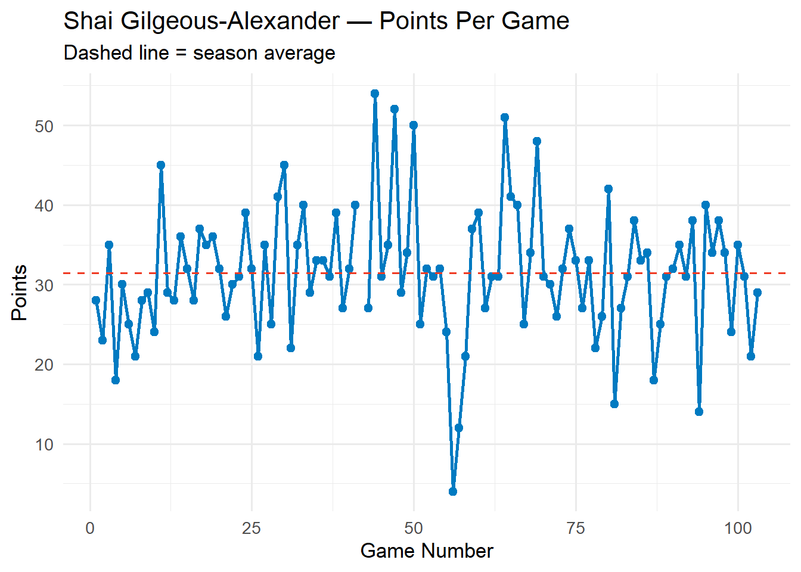
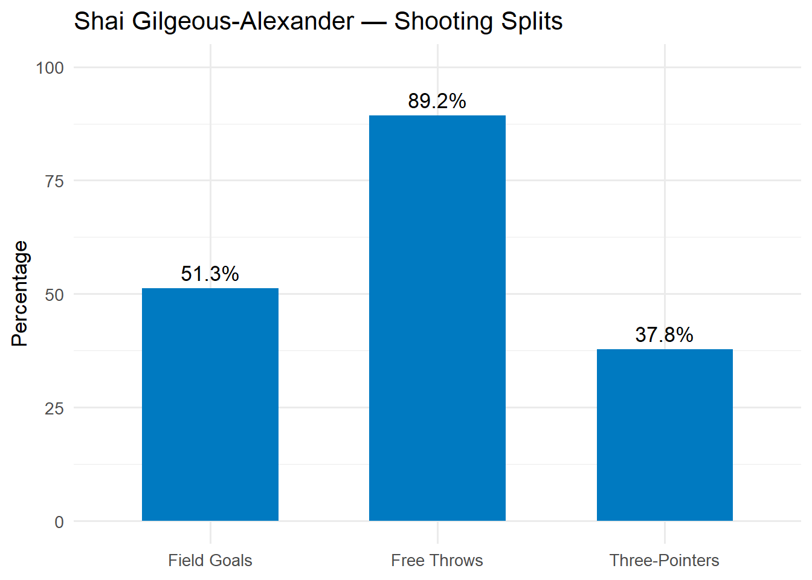
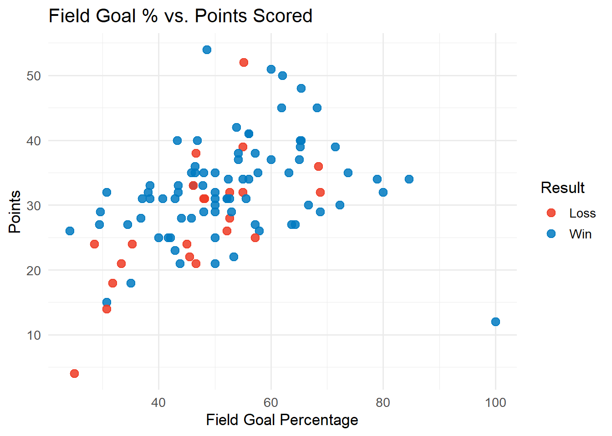
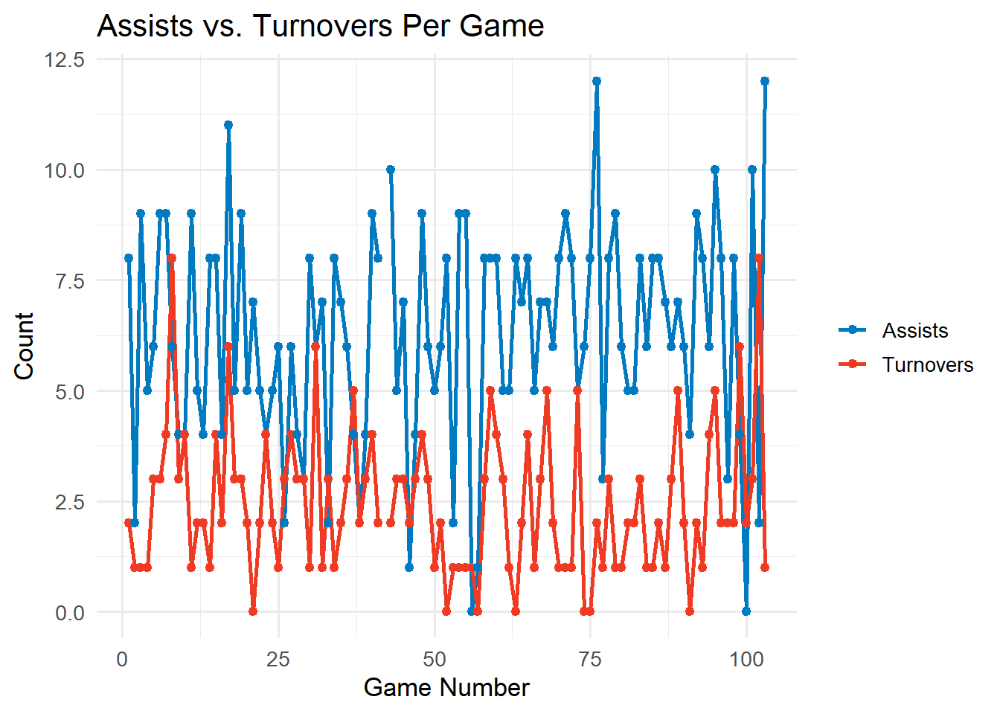

library(tidyverse)Shai Gilgeous-Alexander — 2025 Season Stats
player_stats <- read_csv(
"../../pipeline/nba/data/player_stats/nba_player_Shai_Gilgeous-Alexander_2025.csv",
show_col_types = FALSE
) |>
mutate(
game_date = as.Date(game_date),
field_goal_pct = if_else(field_goals_attempted > 0,
field_goals_made / field_goals_attempted * 100, NA_real_),
three_pct = if_else(three_point_field_goals_attempted > 0,
three_point_field_goals_made / three_point_field_goals_attempted * 100, NA_real_),
free_throw_pct = if_else(free_throws_attempted > 0,
free_throws_made / free_throws_attempted * 100, NA_real_)
) |>
arrange(game_date) |>
mutate(game_num = row_number())Season Averages
avg <- player_stats |>
summarise(
games = n(),
pts = mean(points, na.rm = TRUE),
reb = mean(rebounds, na.rm = TRUE),
ast = mean(assists, na.rm = TRUE),
stl = mean(steals, na.rm = TRUE),
blk = mean(blocks, na.rm = TRUE),
tov = mean(turnovers, na.rm = TRUE),
fg_pct = mean(field_goal_pct, na.rm = TRUE),
three_pct = mean(three_pct, na.rm = TRUE),
ft_pct = mean(free_throw_pct, na.rm = TRUE)
)
knitr::kable(avg, digits = 1)| games | pts | reb | ast | stl | blk | tov | fg_pct | three_pct | ft_pct |
|---|---|---|---|---|---|---|---|---|---|
| 103 | 31.5 | 5 | 6.3 | 1.7 | 1 | 2.4 | 51.3 | 37.8 | 89.2 |
Points Per Game
ggplot(player_stats, aes(x = game_num, y = points)) +
geom_line(color = "#007AC1", linewidth = 1) +
geom_point(color = "#007AC1", size = 2) +
geom_hline(yintercept = avg$pts, linetype = "dashed", color = "#EF3B24") +
labs(
title = "Shai Gilgeous-Alexander — Points Per Game",
subtitle = "Dashed line = season average",
x = "Game Number", y = "Points"
) +
theme_minimal(base_size = 13)
Shooting Splits
shooting_df <- tibble(
Shot_Type = c("Field Goals", "Three-Pointers", "Free Throws"),
Pct = c(avg$fg_pct, avg$three_pct, avg$ft_pct)
)
ggplot(shooting_df, aes(x = Shot_Type, y = Pct)) +
geom_col(fill = "#007AC1", width = 0.6) +
geom_text(aes(label = sprintf("%.1f%%", Pct)), vjust = -0.5) +
labs(title = "Shai Gilgeous-Alexander — Shooting Splits", x = NULL, y = "Percentage") +
ylim(0, 100) +
theme_minimal(base_size = 13)
Field Goal % vs. Points Scored
player_stats |>
mutate(result = if_else(team_winner, "Win", "Loss")) |>
ggplot(aes(x = field_goal_pct, y = points, color = result)) +
geom_point(size = 3, alpha = 0.85) +
scale_color_manual(values = c("Win" = "#007AC1", "Loss" = "#EF3B24")) +
labs(
title = "Field Goal % vs. Points Scored",
x = "Field Goal Percentage", y = "Points", color = "Result"
) +
theme_minimal(base_size = 13)
Assists vs. Turnovers
player_stats |>
select(game_num, assists, turnovers) |>
pivot_longer(cols = c(assists, turnovers), names_to = "stat", values_to = "value") |>
mutate(stat = str_to_title(stat)) |>
ggplot(aes(x = game_num, y = value, color = stat)) +
geom_line(linewidth = 0.9) +
geom_point(size = 1.8) +
scale_color_manual(values = c("Assists" = "#007AC1", "Turnovers" = "#EF3B24")) +
labs(
title = "Assists vs. Turnovers Per Game",
x = "Game Number", y = "Count", color = NULL
) +
theme_minimal(base_size = 13)
Key Stats Summary
summary_tbl <- tibble(
Statistic = c("Games Played", "Points Per Game", "Rebounds Per Game", "Assists Per Game",
"Steals Per Game", "Blocks Per Game", "Turnovers Per Game",
"Field Goal %", "Three-Point %", "Free Throw %"),
Value = c(
avg$games,
sprintf("%.1f", avg$pts),
sprintf("%.1f", avg$reb),
sprintf("%.1f", avg$ast),
sprintf("%.1f", avg$stl),
sprintf("%.1f", avg$blk),
sprintf("%.1f", avg$tov),
sprintf("%.1f%%", avg$fg_pct),
sprintf("%.1f%%", avg$three_pct),
sprintf("%.1f%%", avg$ft_pct)
)
)
knitr::kable(summary_tbl, align = c("l", "r"), col.names = c("Statistic", "Season Avg"))| Statistic | Season Avg |
|---|---|
| Games Played | 103 |
| Points Per Game | 31.5 |
| Rebounds Per Game | 5.0 |
| Assists Per Game | 6.3 |
| Steals Per Game | 1.7 |
| Blocks Per Game | 1.0 |
| Turnovers Per Game | 2.4 |
| Field Goal % | 51.3% |
| Three-Point % | 37.8% |
| Free Throw % | 89.2% |